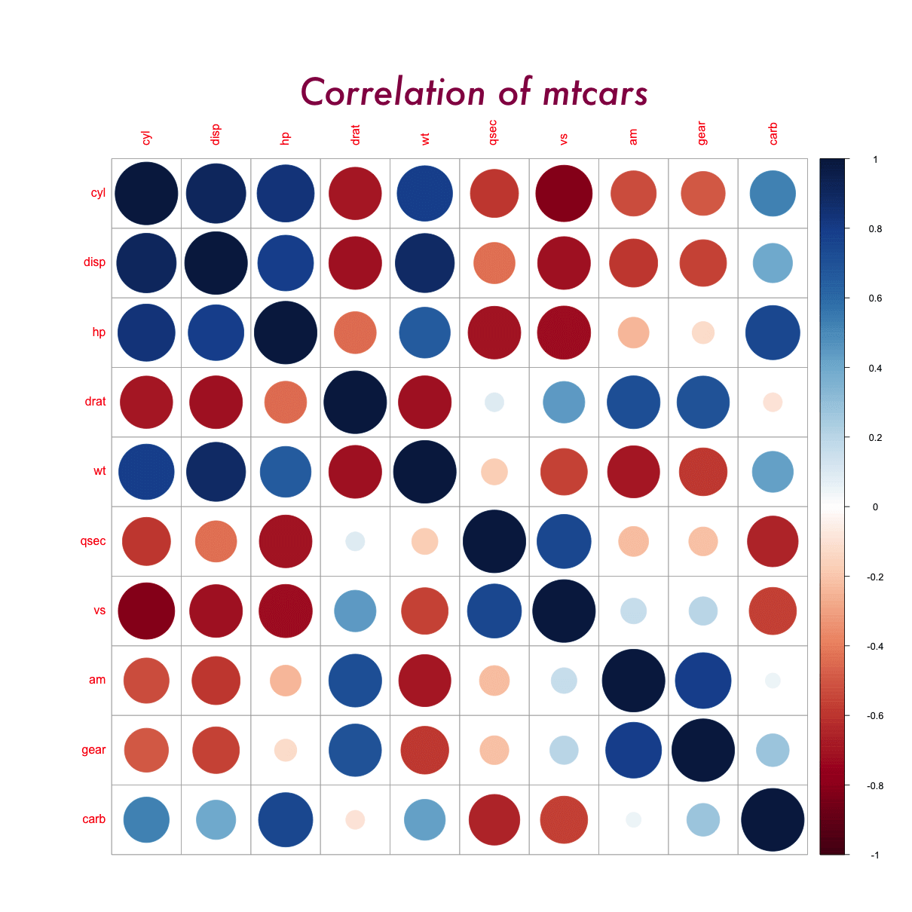

An educational resource for those seeking knowledge related to machine learning and statistical computing in R. Here, you will find quality articles, with working R code and examples, where, the goal is to make the #rstats concepts clear and as simple as possible.
This is built by keeping in mind, statisticians who are new to R programming language, R programmers without a stats background, analysts who work in SAS or python, college grads and developers who are relatively new to both R and stats/ML. If you are completely new to R, this R tutorial is a good place it start.
